<title>Sahayak End-to-End Test Report</title>
<meta name="claude:viewport-fit-sides" content="cover">
<link rel="stylesheet" href="https://fonts.googleapis.com/css2?family=Inter:wght@400;500;600&family=Space+Grotesk:wght@500;700&display=swap">
<style>
/* Layout: one reading column; evidence as captioned figure grids grouped by test chapter. */
:root {
  --bg: #f7faf9;
  --surface: #ffffff;
  --fg: #14211f;
  --muted: #55655f;
  --line: #d9e3df;
  --accent: #0f766e;
  --accent-soft: #e2f3ef;
  --bad: #b42318;
  --bad-soft: #fde8e6;
  --good: #15803d;
  --good-soft: #e3f4e8;
  --warn: #b45309;
  --warn-soft: #fdf0dc;
  --display: "Space Grotesk", system-ui, sans-serif;
  --text: "Inter", system-ui, sans-serif;
}
@media (prefers-color-scheme: dark) {
  :root:not([data-theme="light"]) {
    --bg: #0e1715; --surface: #15211e; --fg: #e6efec; --muted: #9db0aa; --line: #27382f;
    --accent: #4fd1c0; --accent-soft: #14332e; --bad: #ff8f84; --bad-soft: #3a1c19;
    --good: #6fd68e; --good-soft: #15301f; --warn: #f1b36b; --warn-soft: #3a2a12; color-scheme: dark;
  }
}
:root[data-theme="dark"] {
  --bg: #0e1715; --surface: #15211e; --fg: #e6efec; --muted: #9db0aa; --line: #27382f;
  --accent: #4fd1c0; --accent-soft: #14332e; --bad: #ff8f84; --bad-soft: #3a1c19;
  --good: #6fd68e; --good-soft: #15301f; --warn: #f1b36b; --warn-soft: #3a2a12; color-scheme: dark;
}
body { background: var(--bg); color: var(--fg); font-family: var(--text); font-size: 15px; line-height: 1.6;
  padding-left: max(16px, env(safe-area-inset-left, 0px)); padding-right: max(16px, env(safe-area-inset-right, 0px)); padding-block: 32px 64px; }
main { max-width: 1040px; margin: 0 auto; display: grid; gap: 40px; }
h1, h2, h3 { font-family: var(--display); text-wrap: balance; line-height: 1.2; margin: 0; }
h1 { font-size: clamp(28px, 5vw, 40px); }
h2 { font-size: 24px; padding-top: 8px; border-top: 2px solid var(--line); }
h3 { font-size: 17px; }
p { margin: 0; max-width: 68ch; }
.lede { color: var(--muted); font-size: 17px; max-width: 62ch; }
.meta { color: var(--muted); font-size: 13px; letter-spacing: .04em; text-transform: uppercase; }
section { display: grid; gap: 16px; }
.tiles { display: grid; grid-template-columns: repeat(auto-fit, minmax(170px, 1fr)); gap: 12px; }
.tile { background: var(--surface); border: 1px solid var(--line); border-radius: 10px; padding: 14px 16px; display: grid; gap: 2px; }
.tile b { font-family: var(--display); font-size: 26px; font-variant-numeric: tabular-nums; }
.tile span { color: var(--muted); font-size: 13px; }
.tablewrap { overflow-x: auto; background: var(--surface); border: 1px solid var(--line); border-radius: 10px; }
table { border-collapse: collapse; width: 100%; min-width: 560px; font-variant-numeric: tabular-nums; }
th, td { text-align: left; padding: 10px 14px; border-bottom: 1px solid var(--line); vertical-align: top; }
th { font-size: 12px; letter-spacing: .05em; text-transform: uppercase; color: var(--muted); }
tr:last-child td { border-bottom: 0; }
.pill { display: inline-block; font-size: 12px; font-weight: 600; padding: 2px 9px; border-radius: 99px; white-space: nowrap; }
.pill.ok { background: var(--good-soft); color: var(--good); }
.pill.no { background: var(--bad-soft); color: var(--bad); }
.pill.wr { background: var(--warn-soft); color: var(--warn); }
.grid { display: grid; grid-template-columns: repeat(auto-fit, minmax(240px, 1fr)); gap: 16px; align-items: start; }
.pair { display: grid; grid-template-columns: repeat(auto-fit, minmax(260px, 1fr)); gap: 16px; align-items: start; }
figure { margin: 0; display: grid; gap: 8px; min-width: 0; }
figure img { width: 100%; height: auto; border: 1px solid var(--line); border-radius: 8px; background: var(--surface); display: block; }
figcaption { font-size: 13px; color: var(--muted); }
figcaption b { color: var(--fg); font-weight: 600; }
.tag { font-size: 11px; font-weight: 600; letter-spacing: .06em; text-transform: uppercase; }
.tag.before { color: var(--bad); } .tag.after { color: var(--good); }
.fix { background: var(--surface); border: 1px solid var(--line); border-radius: 10px; padding: 18px; display: grid; gap: 14px; }
.fix header { display: grid; gap: 4px; }
code { font-size: 13px; background: var(--accent-soft); padding: 1px 6px; border-radius: 4px; overflow-wrap: anywhere; }
ul { margin: 0; padding-left: 20px; display: grid; gap: 6px; max-width: 70ch; }
.note { background: var(--warn-soft); border-radius: 10px; padding: 14px 16px; color: var(--fg); }
</style>

<main>
  <header style="display:grid;gap:12px">
    <div class="meta">Sahayak · test run of 14 Nov 2026 · live Supabase database</div>
    <h1>Sahayak end-to-end test report</h1>
    <p class="lede">Three real phone-OTP logins (owner, partner, admin) drove one job through request, dispatch, accept, work, payment and rating, then through decline and cancel. Five defects found in that run were fixed and re-verified on screen. The race-condition harnesses and the mobile app were run afterwards.</p>
  </header>

  <div class="tiles">
    <div class="tile"><b>7 / 7</b><span>flows passed: owner, partner, admin, decline, cancel ×2, complete</span></div>
    <div class="tile"><b>9 / 10</b><span>live harnesses fully green; the one miss fails the same on the original code</span></div>
    <div class="tile"><b>528</b><span>backend unit tests passing (+4 new)</span></div>
    <div class="tile"><b>136</b><span>web tests passing (+3 new); mobile 23 (+3 new)</span></div>
  </div>

  <section>
    <h2>1. The full flow, as a user sees it</h2>
    <p>Test numbers: owner <code>9000000901</code>, partner <code>9000000902</code>, admin <code>7688930772</code>. First pass, before any fix.</p>
    <div class="grid">
      <figure>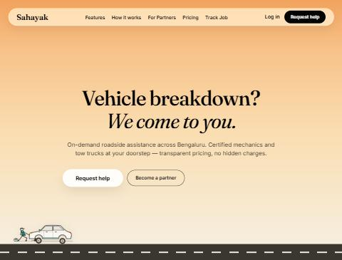<figcaption><b>Landing.</b> Public page.</figcaption></figure>
      <figure>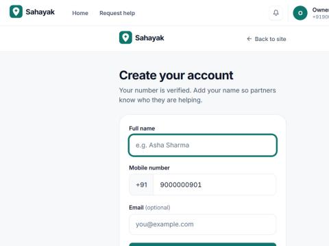<figcaption><b>Owner signs in</b> with a real OTP, then creates a profile.</figcaption></figure>
      <figure>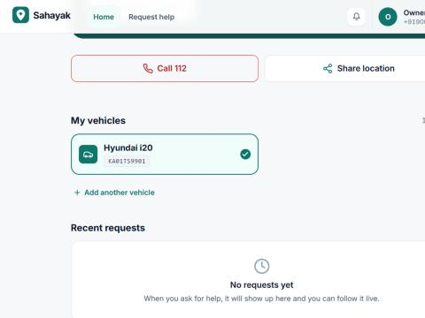<figcaption><b>Vehicle registered</b> (Hyundai i20).</figcaption></figure>
      <figure>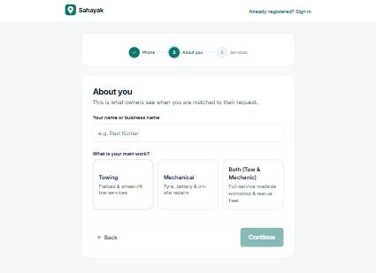<figcaption><b>Partner registration,</b> step 2 of 3.</figcaption></figure>
      <figure>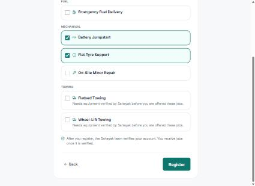<figcaption><b>Services offered.</b> Towing needs verified equipment.</figcaption></figure>
      <figure>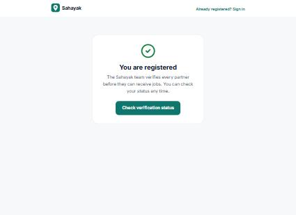<figcaption><b>Registered, pending</b> admin verification.</figcaption></figure>
      <figure>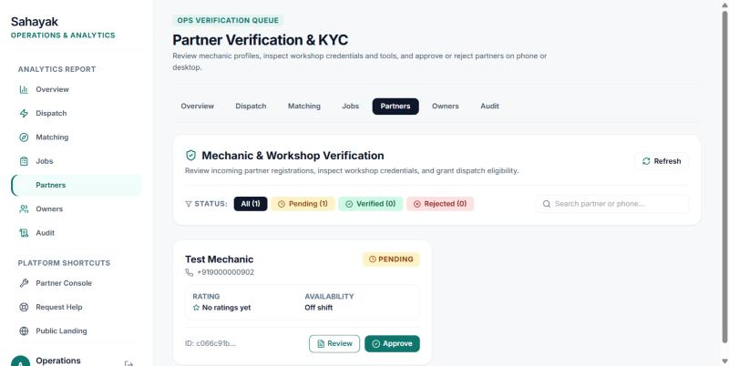<figcaption><b>Admin queue:</b> the partner appears as Pending.</figcaption></figure>
      <figure>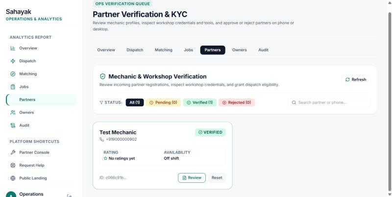<figcaption><b>Admin approves.</b> Status flips to Verified.</figcaption></figure>
      <figure>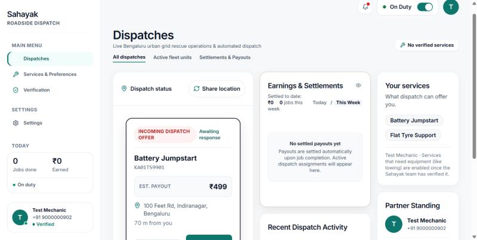<figcaption><b>Dispatch offer</b> to the partner: price, distance, no owner contact yet.</figcaption></figure>
      <figure>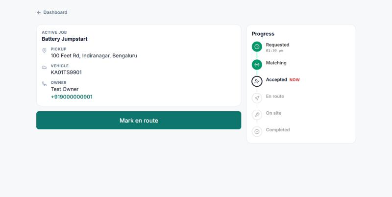<figcaption><b>After accepting,</b> the owner's contact is released.</figcaption></figure>
      <figure>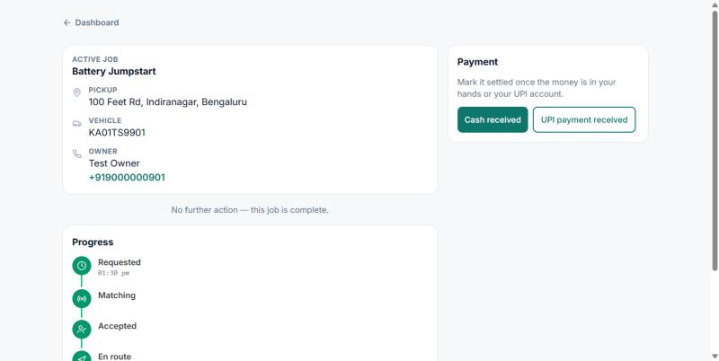<figcaption><b>Job completed</b> after the owner's 4-digit start code.</figcaption></figure>
      <figure>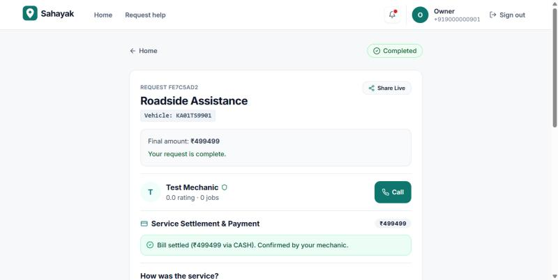<figcaption><b>Owner sees</b> the settled bill.</figcaption></figure>
      <figure>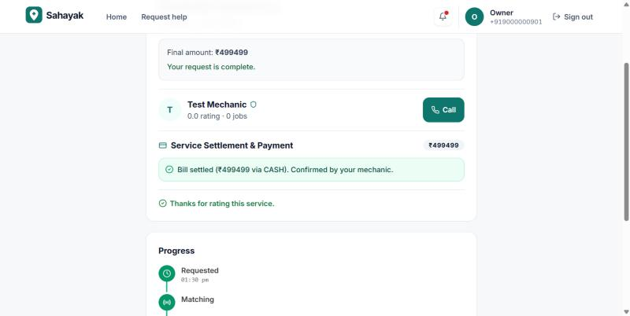<figcaption><b>Owner rates</b> the service.</figcaption></figure>
      <figure>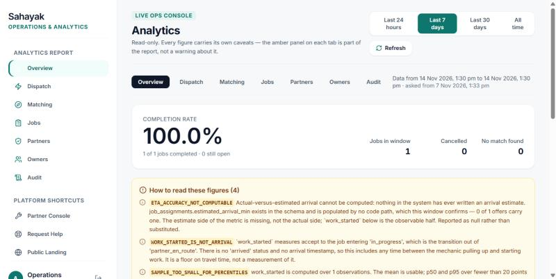<figcaption><b>Admin analytics</b> count the job: 1 of 1 completed.</figcaption></figure>
    </div>
  </section>

  <section>
    <h2>2. Defects found and fixed</h2>
    <p>Each fix has an automated test that fails on the old code and passes on the new, plus a before and after screenshot.</p>

    <div class="fix">
      <header><h3>Price accepted at ₹499,499 for a ₹499 job</h3><p>The final-amount field was prefilled and typing appended to it. The API stored it. Now the field selects on focus, the form blocks amounts above the ceiling, and the API answers <code>400 PRICE_FINAL_OUT_OF_RANGE</code> (ceiling: larger of 5× the estimate or ₹5,000, capped at ₹50,000).</p></header>
      <div class="pair">
        <figure><span class="tag before">Before</span>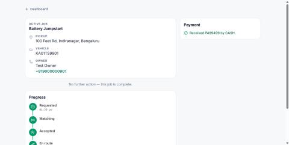<figcaption>"Received ₹499499 by CASH."</figcaption></figure>
        <figure><span class="tag after">After</span>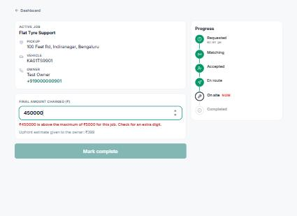<figcaption>Warning shown, button disabled. Direct API call also refused.</figcaption></figure>
      </div>
    </div>

    <div class="fix">
      <header><h3>Partner screen said "location shared" with no GPS</h3><p>Browser location was denied, no fix was ever sent, yet the dashboard claimed dispatch could see the partner. The first search found nobody. The screen now says so and offers a retry.</p></header>
      <div class="pair">
        <figure><span class="tag before">Before</span>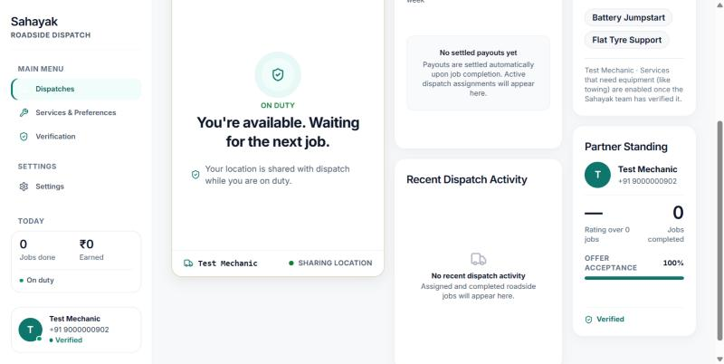<figcaption>"Your location is shared with dispatch."</figcaption></figure>
        <figure><span class="tag after">After</span>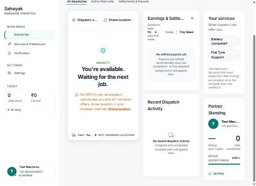<figcaption>"No GPS fix yet… dispatch cannot see you." Footer reads NOT SHARING LOCATION.</figcaption></figure>
      </div>
    </div>

    <div class="fix">
      <header><h3>Owner received the partner's phone before the partner accepted</h3><p>ADR-017 ties contact release to the assignment. While an offer was only <code>offered</code>, the owner page still carried the partner's name and number. Release now starts at <code>accepted</code>. The API returns every partner field as null until then.</p></header>
      <div class="pair">
        <figure><span class="tag before">Before</span>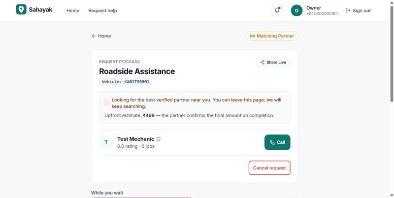<figcaption>"Matching Partner" yet a Call button for Test Mechanic.</figcaption></figure>
        <figure><span class="tag after">After</span>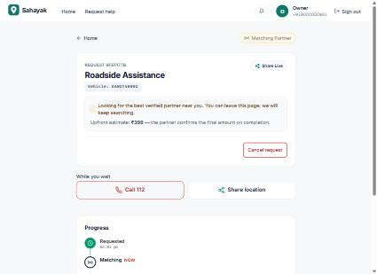<figcaption>Same state: no name, no number.</figcaption></figure>
      </div>
    </div>

    <div class="fix">
      <header><h3>Partner code boxes clipped at 340px, and digits lost</h3><p>Six fixed 48px boxes were wider than a 340px card, and the handler kept only the last typed character, so SMS autofill or fast typing left one digit. Boxes are now flexible and a pasted or autofilled code spreads across them.</p></header>
      <div class="pair">
        <figure><span class="tag before">Before</span>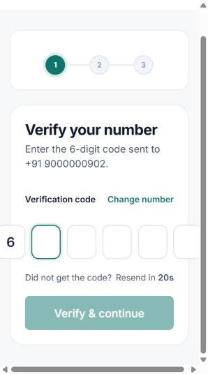<figcaption>First box cut off the left edge.</figcaption></figure>
        <figure><span class="tag after">After</span>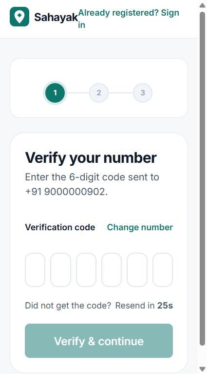<figcaption>All six visible.</figcaption></figure>
      </div>
    </div>

    <div class="fix">
      <header><h3>Admin console rendered with no session</h3><p>The data calls were already refused (401), but the page shell appeared. The route now requires the ops or super-admin role.</p></header>
      <figure style="max-width:520px"><span class="tag before">Before</span>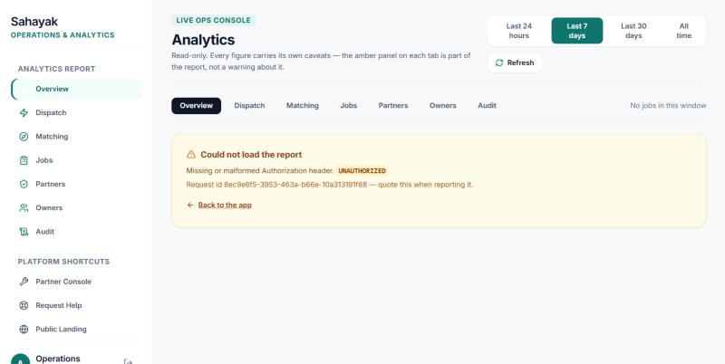<figcaption>Shell visible, "Could not load the report: UNAUTHORIZED".</figcaption></figure>
    </div>
  </section>

  <section>
    <h2>3. Decline and cancel paths</h2>
    <p>All states confirmed in the database afterwards: job 1 rejected then cancelled, job 2 completed at ₹450, job 3 cancelled after accept. No partner was left carrying phantom load.</p>
    <div class="grid">
      <figure>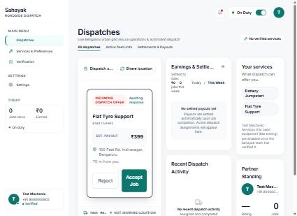<figcaption><b>Decline 1.</b> Partner receives the offer.</figcaption></figure>
      <figure>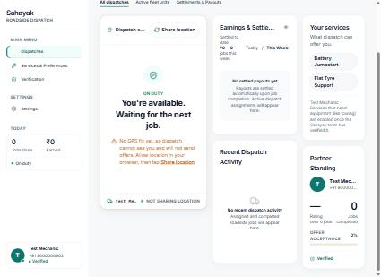<figcaption><b>Decline 2.</b> Rejected; partner back to available, acceptance rate updates.</figcaption></figure>
      <figure>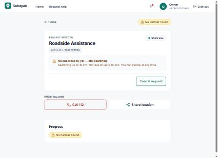<figcaption><b>Decline 3.</b> Owner sees "No Partner Found, still searching".</figcaption></figure>
      <figure>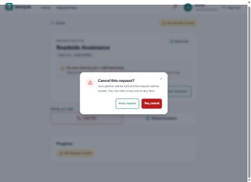<figcaption><b>Cancel before accept.</b> Confirmation dialog.</figcaption></figure>
      <figure>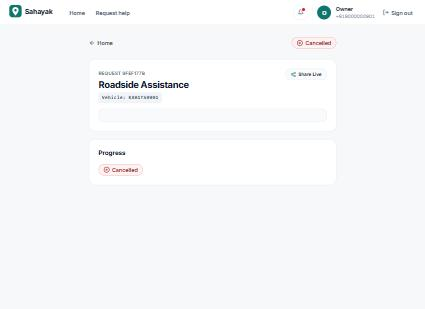<figcaption>Job cancelled.</figcaption></figure>
      <figure>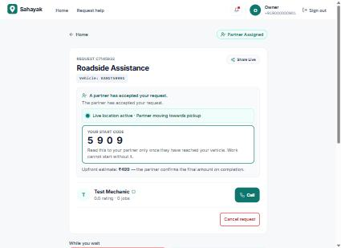<figcaption><b>Cancel after accept.</b> Partner assigned, start code shown to owner.</figcaption></figure>
      <figure>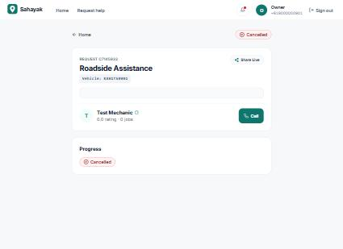<figcaption>Cancelled; partner released.</figcaption></figure>
      <figure>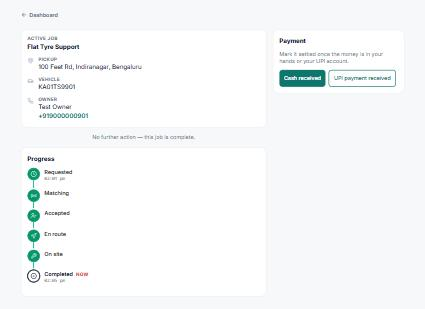<figcaption><b>Complete path.</b> Finished at ₹450 with the guard in place.</figcaption></figure>
    </div>
  </section>

  <section>
    <h2>4. Race conditions and regression</h2>
    <p>Run against the live database with real Supabase accounts. Each harness checks Postgres directly, not only the API response, and restores table counts at the end.</p>
    <div class="tablewrap"><table>
      <thead><tr><th>Harness</th><th>What it proves</th><th>Result</th></tr></thead>
      <tbody>
        <tr><td><code>check_job_race</code></td><td>Cancel vs complete on one job: one wins, one gets 409, no lost update</td><td><span class="pill ok">43 / 43</span></td></tr>
        <tr><td><code>check_dispatch_race</code></td><td>Two partners accepting one offer; concurrent dispatch; no deadlocks</td><td><span class="pill ok">69 / 69</span></td></tr>
        <tr><td><code>check_partner_offers</code></td><td>Accept, reject and expiry of offers</td><td><span class="pill ok">28 / 28</span></td></tr>
        <tr><td><code>check_dispatch_flow</code></td><td>Matching, ranking, widening search</td><td><span class="pill ok">50 / 50</span></td></tr>
        <tr><td><code>check_job_cancellation</code></td><td>Owner cancel in every state; cannot cancel another owner's job</td><td><span class="pill ok">54 / 54</span></td></tr>
        <tr><td><code>check_job_lifecycle</code></td><td>Status transitions, start code, completion</td><td><span class="pill ok">78 / 78</span></td></tr>
        <tr><td><code>check_payments_and_sharing</code></td><td>Cash/UPI settlement, share links</td><td><span class="pill ok">29 / 29</span></td></tr>
        <tr><td><code>check_ratings</code></td><td>Rating rules and aggregates</td><td><span class="pill ok">44 / 44</span></td></tr>
        <tr><td><code>check_notifications</code></td><td>Notification writes and reads</td><td><span class="pill ok">79 / 79</span></td></tr>
        <tr><td><code>check_dispatch_capacity</code></td><td>Burst load against the connection pool</td><td><span class="pill wr">48 / 49</span></td></tr>
      </tbody>
    </table></div>
    <p class="note"><b>The one miss</b> is "no connection was left checked out: 1 still checked out". It failed identically on three reruns and on the original code with my changes removed, so the fixes did not cause it. It may be a real pool leak or a harness artifact, and it needs its own look.</p>
  </section>

  <section>
    <h2>5. Mobile app</h2>
    <p>This is the real React Native code, run through its web target at phone width, not a physical device or emulator.</p>
    <div class="pair">
      <figure><span class="tag before">Before</span>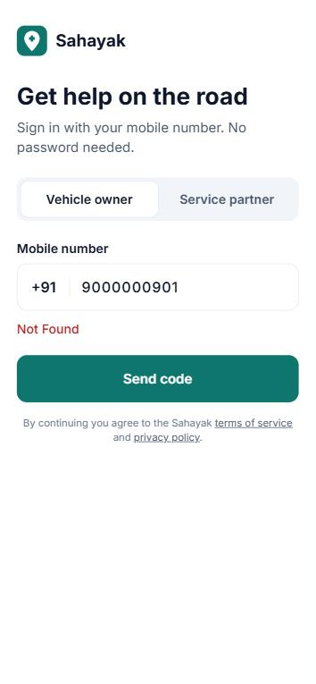<figcaption><b>Defect.</b> <code>mobile/.env</code> held a bare host, so every call hit <code>/auth/me</code> and returned a bare "Not Found". On a phone, nothing would have worked.</figcaption></figure>
      <figure><span class="tag after">After</span>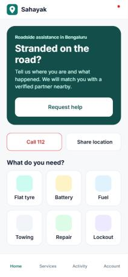<figcaption><b>Fixed.</b> The client now adds <code>/api/v1</code> itself. Same env, signed in, owner home loads.</figcaption></figure>
      <figure>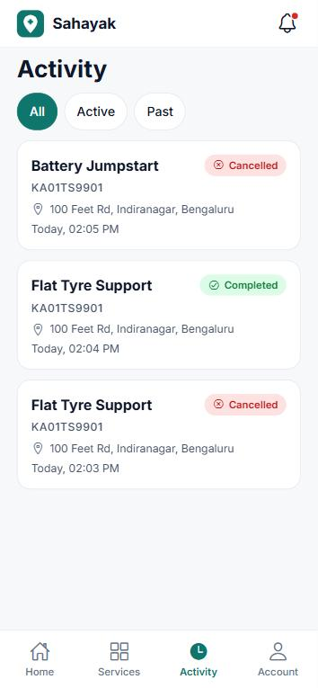<figcaption><b>Cross-client check.</b> Activity lists the three jobs created on web, with matching statuses.</figcaption></figure>
    </div>
  </section>

  <section>
    <h2>6. Not covered, and open items</h2>
    <ul>
      <li><b>Mobile:</b> the request flow, the partner screens and push notifications were not run. They need real GPS and a device.</li>
      <li><b>Location was supplied through the API</b> for the partner, because this browser denies geolocation. Real GPS dispatch was not exercised.</li>
      <li><b>Test data in the live database:</b> one owner, one partner, one vehicle, three jobs. The old test rows were removed first because the harnesses recreate the same phone numbers and orphaned the earlier profile.</li>
      <li><b>Small things seen:</b> the cancelled-job page keeps a Call button and an empty box; the admin console scrolls sideways on a 340px screen; partner sign-up asks for the phone and code again after login.</li>
      <li><b>Harness collision:</b> harnesses and manual testing share the test numbers, so running them overwrites a hand-made owner or partner.</li>
    </ul>
  </section>
</main>
